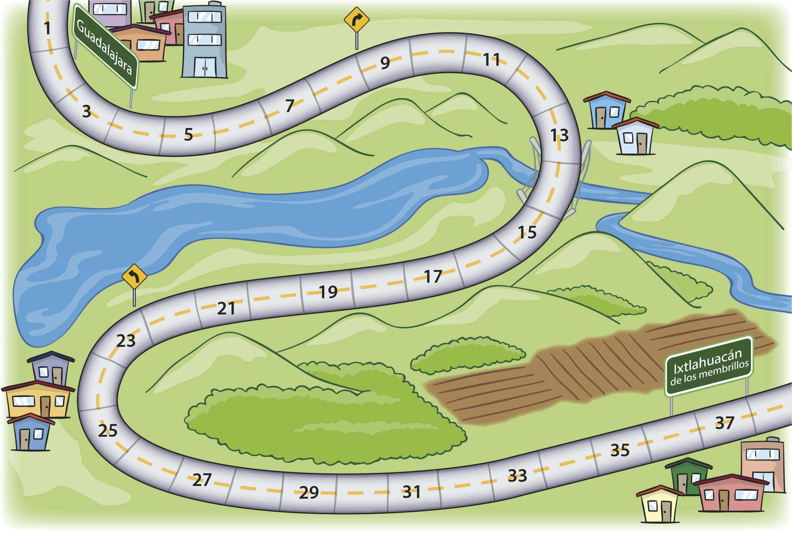
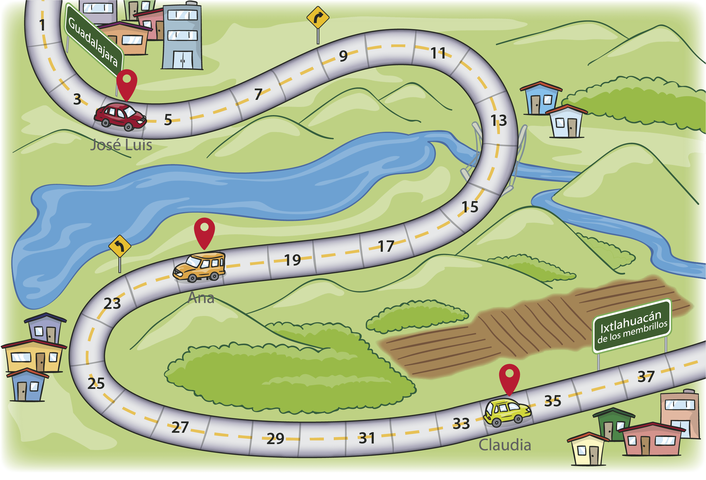

1. José Luis está a 4 kilómetros de Guadalajara.
2. Ana se encuentra 6 kilómetros adelante del kilómetro 15.
3. A Claudia le faltan 3 kilómetros para llegar a Ixtlahuacán.

1. A José Luis le faltan
para alcanzar a Ana.
2. A Claudia le faltan
para llegar a Ixtlahuacán.
1. Hace 10 minutos, Ana estaba en el kilómetro 13, por lo tanto avanzó
2. José Luis regresó a la ciudad a recoger a su mamá. Tuvo que regresar